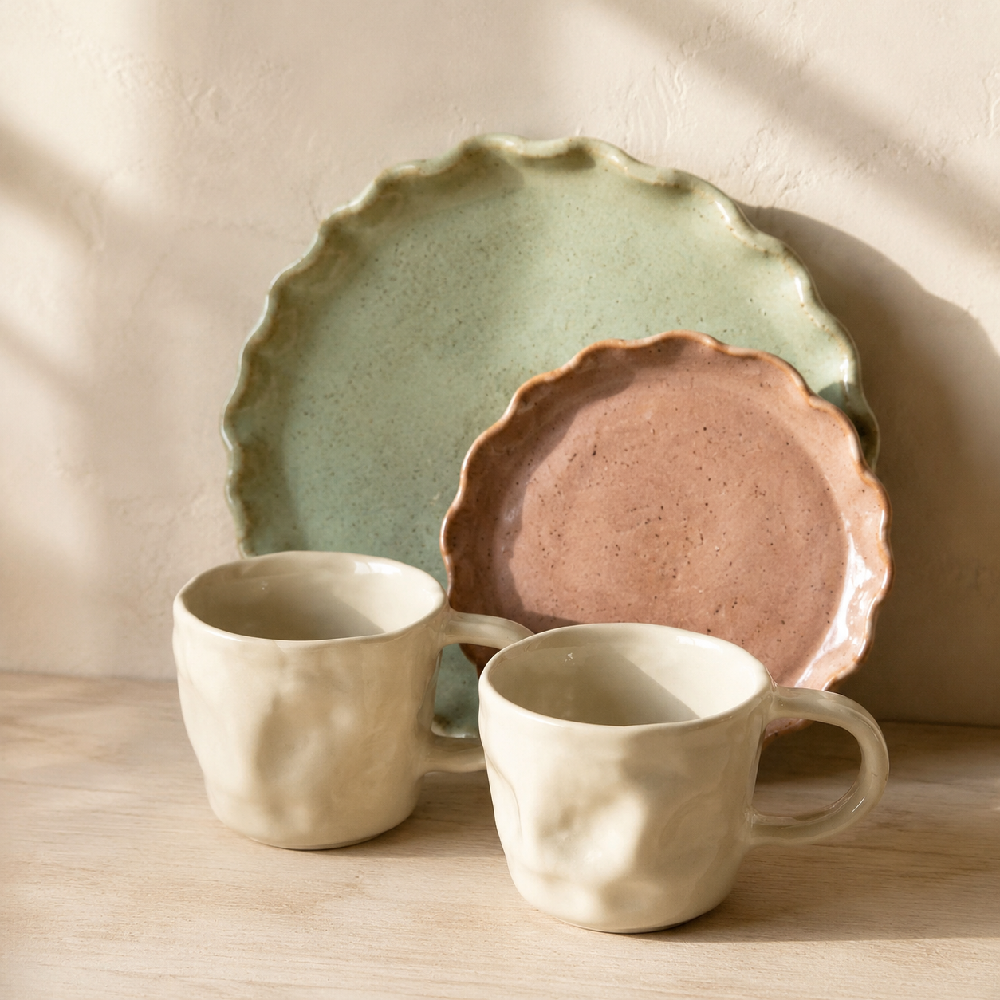

тарілка «Хвиля»
Ø 24 см · шавлієва
Кераміка ручної роботи
Формуємо вручну невеликими партіями. Відправляємо готові вироби за 1–3 дні.
Обрати свійНова колекція · серпень 2026
Безпечна харчова глазур
✦Можна мити в посудомийці
✦Безкоштовна доставка від 3000 ₴
Готові до відправлення
Ø 24 см · шавлієва
320 мл · молочна
Ø 16 см · біла в крапку
4 тарілки · 2 кольори
тарілка-тертка «Ритуал»
Натріть часник, імбир або стиглий помідор на рельєфному центрі. Додайте олію та спеції — і подавайте без зайвого посуду.
Майстер-клас у майстерні
За 2,5 години сформуєте власну чашку та оберете колір глазурі. Ми висушимо й двічі випалимо виріб. Забрати готову роботу можна через 3–4 тижні.
TYKHO
Подарунковий сертифікат2 000 ₴Коли складно обрати форму
Сертифікат діє на посуд і майстер-класи протягом 6 місяців. Електронний надішлемо одразу після оплати, друкований — у конверті разом із вашим текстом.
Не фабричний тираж
Кожен виріб формуємо, глазуруємо та випалюємо вручну. Край може бути трохи нерівним, а відтінок — відрізнятися від фото. Це ознаки ручної роботи, не брак.
Вже живуть у ваших домівках
«Чашка зручна, не важка й не перегріває ручку. Колір наживо ще спокійніший, ніж на фото.»
«Тертка справді працює: часник перетирається за кілька рухів. Тепер роблю в ній соус до хліба.»
Доставка без сюрпризів
Новою поштою по Україні протягом 1–3 робочих днів.
Карткою на сайті або післяплатою з передоплатою 200 ₴.
Пошкодилося в дорозі — замінимо або повернемо кошти.
